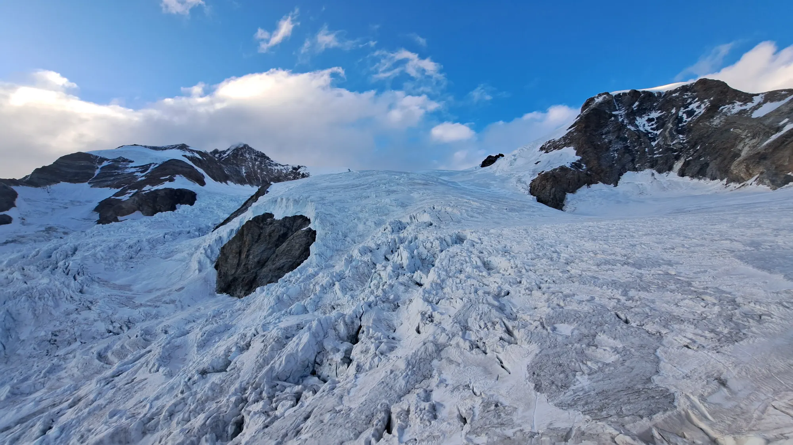

Dal 1886,
a piedi.
Più di un secolo di salite, rifugi, soccorso e cultura alpina: la storia della sezione in tappe.

Le tappe
Accanto all’attività sul terreno, la sezione ha sempre organizzato proiezioni, conferenze e dibattiti, e documentato la propria vita in numerose pubblicazioni e negli annuari.
- 1886L’11 aprile, alla Birraria Gambrinus di Bellinzona, nasce il Club Alpino Ticinese, nell’anno del centenario della prima salita al Monte Bianco. Primo presidente è l’avvocato Curzio Curti. Lo scopo: visitare, studiare e far conoscere le montagne del Cantone e delle regioni vicine.
- 1887Il 20 marzo il club si unisce al Club Alpino Svizzero come sezione ticinese; Lugano ne diventa la sede.
- 1911A Lanzo d’Intelvi viene inaugurato il vessillo sezionale.
- 1913Nasce la sezione di Lugano del Club Alpino Femminile Svizzero, presieduta da Adelina Rossi-Baragiola.
- 1918Si costituiscono le stazioni di soccorso alpino di Faido, Airolo e Olivone. La formazione delle guide spetta alla sezione, la nomina al Consiglio di Stato.
- Anni ’30Cresce l’arrampicata su roccia: Emilio Comici, il numero uno dell’alpinismo italiano, viene invitato ai Denti della Vecchia. Nel 1932 Tita Calvi, don Giugni e Aldo Balmelli aprono la Nord-Est del Piz Prevat; Bruno Primi «Stüva» diventa guida e firma grandi classiche, dal Civetta al Cervino.
- 1936Prima presenza di soci nell’Himalaya centrale, seguita da Lapponia (1959), Huascarán (1977) e Pumori (1978).
- 1940Nasce il gruppo Seniori.
- Anni ’60Nasce il gruppo giovanile OG ed entra in servizio la colonna di soccorso del Sottoceneri. Nel 1963 l’alpinista Aldo Fontana porta nuovi stimoli; nel 1964 nasce il Gruppo Scoiattoli.
- 1980Le sezioni maschile e femminile si fondono.
- 1982Prima edizione della «settimana mini» per i più piccoli.
- 2003Inaugurata la nuova Capanna Cristallina, progettata da Baserga e Mozzetti.
- 2016Conclusa la ricostruzione della Capanna Monte Bar.